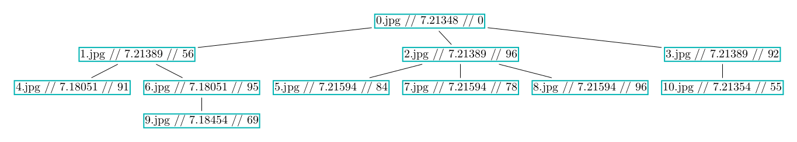
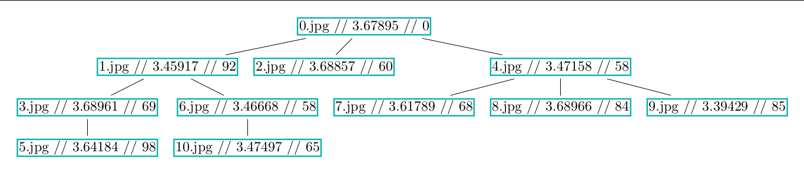
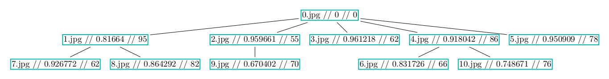
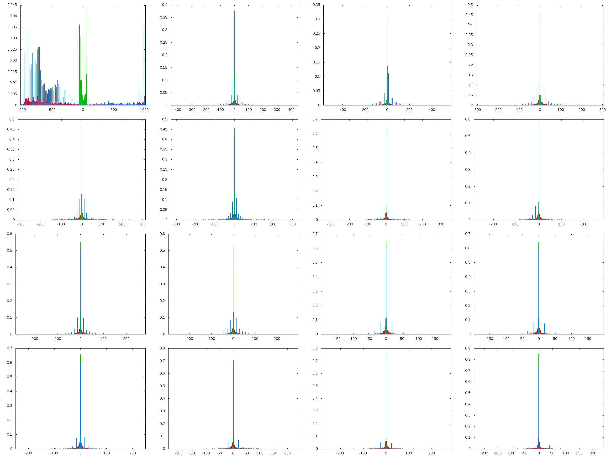
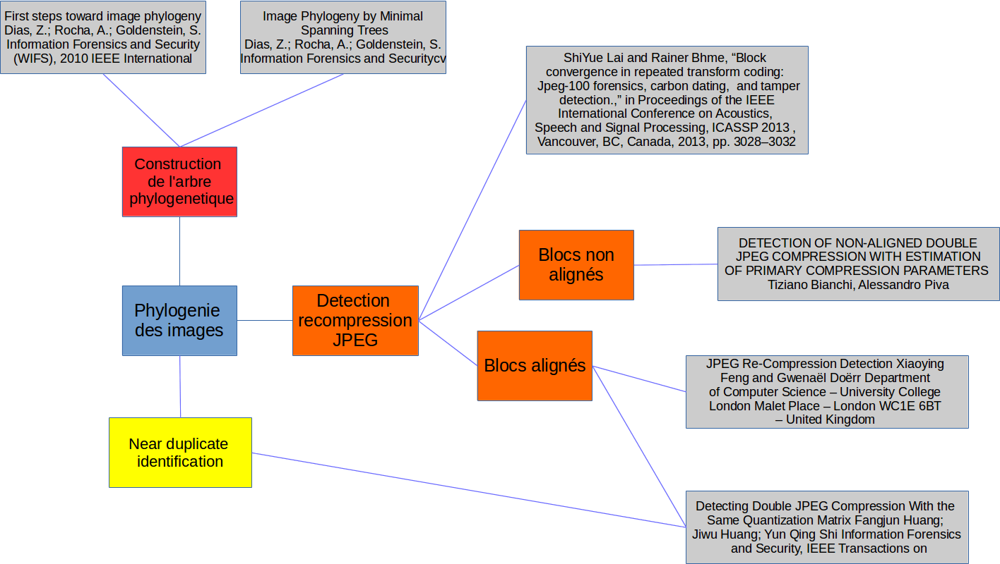

semaine4
Cette semaine a été consacrée à tenter de trouver une première métrique qui permettrait de dire qu'une image n'est pas le parent d'une autre. Je me suis d'abord dirigé vers l'entropie de l'image en entier, mais comme le montre Fig. 1 l'entropie varie extrêmement peu entre les images.
- L'utilisation de l'entropie de l'image m'a semblé être une bonne idée, cependant, les artefacts de blocs qui permettraient de diminuer l'entropie et de détecter que l'image est recompressée n'apparaissent pas pour Q >= 50
- L'entropie des coefficients DCT ne donne rien non plus, une entropie élevée est associée à un Q élevé, peu importe l'historique des Q.
- L'entropie des blocs (Fig. 2) est également une fausse piste, de même que l'entropie inter-blocs.
Je pense que mon erreur dans cette démarche est qu'aucune valeur n'est normalisée, et que donc elles ne sont pas comparables entre elles.

Figure 1: Arbre phylogenetique avec respectivement le nom de l'image / l'entropie de l'image / Q

Figure 2: Arbre phylogenetique avec respectivement le nom de l'image / l'entropie moyenne des blocs 8x8 de l'image / Q
Il est cependant possible que l'entropie soit quand même une bonne idée, mais je vais pour l'instant la laisser de côté et plus regarder la distance entre les histogrammes. J'utilise OpenCV, où un certain nombre de distances entre histogrammes est déjà implémenté. Tout est donc mis en place, et on peut voir un exemple Fig. 3. Le problème est que je ne sais pas vraiment comment utiliser une distance entre deux histogrammes. Cela serait parfait dans le cas de la découverte de near-duplicates, mais comme nous avons une approche différente ce n'est pas aussi simple.

Figure 3: Distance de Bhattacharyya entre un noeud et son parent.
J'ai également replot les images sur le même plot (Fig. 4). On n'y apprend par grand chose de plus, mais cela permet de bien voir qu'il manque des valeurs lorsque l'on repasse à un Q plus élevé.

Figure 4: Histogramme du coefficient DC et des 15 premier coefficients AC avec respectivement Q=100, Q=50,100 et Q=50 en rouge, bleu et vert

Figure 5: Plan